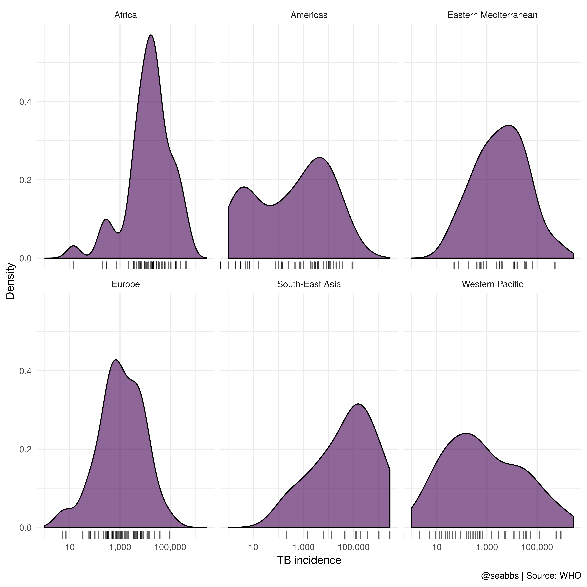
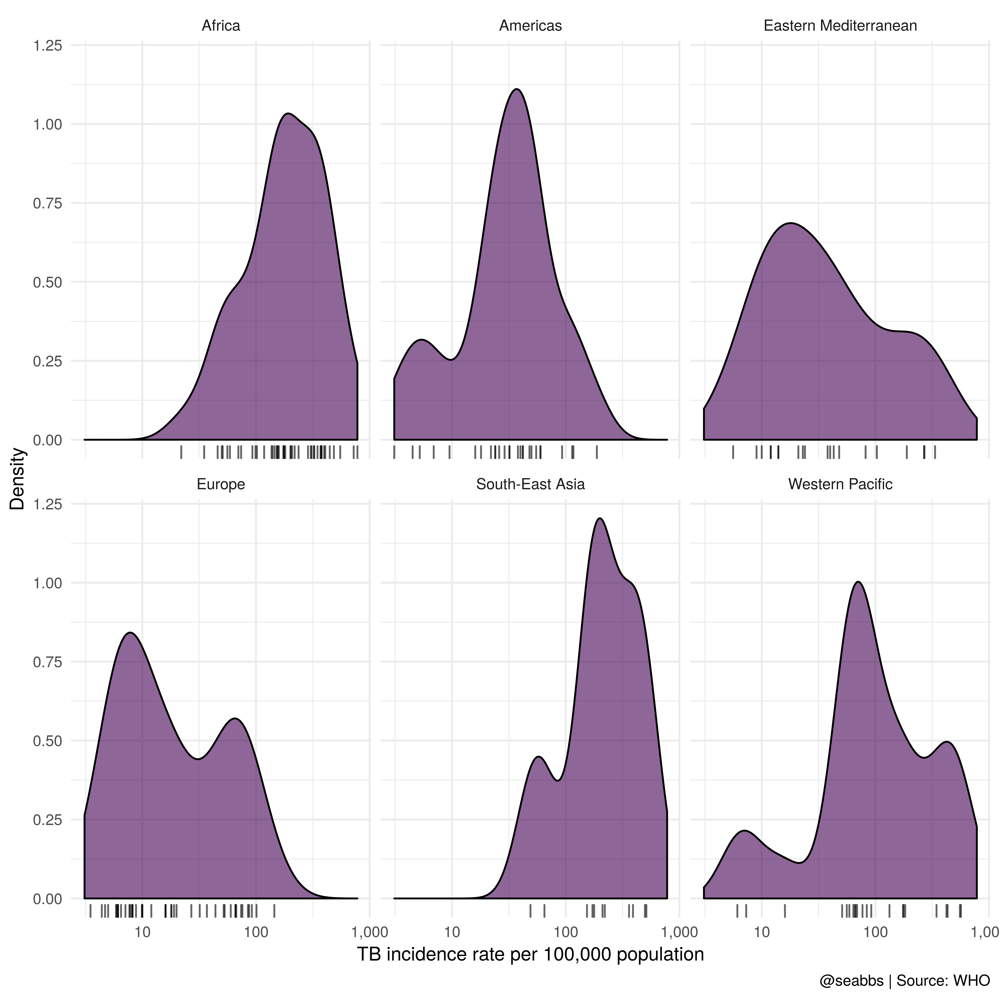
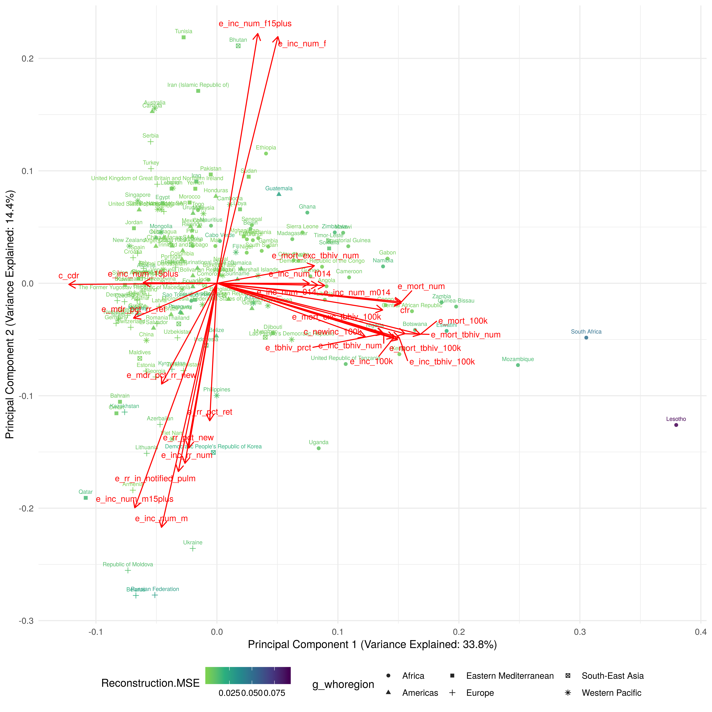

Introduction
- Motivation
- Detail
- What is in this post
- Anomaly detection
- Autoencoders
- H2o implementation
- PCA
Packages
First we load the package required for the analysis, using pacman to manange the installation process.
if (!require(pacman)) install.packages("pacman"); library(pacman)
p_load("tidyverse")
p_load("h2o")
p_load("getTBinR")
p_load("knitr")
p_load("FactoMineR")
p_load("cluster")
p_load("scales")
p_load("ggfortify")
p_load("missMDA")
p_load("broom")
p_load("ggrepel")
p_load_gh("thomasp85/patchwork", dependencies = TRUE)Data
- Download the WHO TB data using
getTBinR. Point to previous blog posts and package website.
tb <- get_tb_burden()## Downloading data from: https://extranet.who.int/tme/generateCSV.asp?ds=estimates## Saving data to: /tmp/RtmpOPr2M1/TB_burden.rds## Downloading data from: https://extranet.who.int/tme/generateCSV.asp?ds=mdr_rr_estimates## Saving data to: /tmp/RtmpOPr2M1/MDR_TB.rds## Joining TB burden data and MDR TB data.## Joining, by = c("country", "iso2", "iso3", "iso_numeric", "year")Exploratory analysis
tb_2016 <- tb %>%
filter(year == 2016) %>%
select(-contains("_lo"),
-contains("_hi"),
-contains("source_"),
-starts_with("iso"),
-year)
plot_tb_density <- function(df, var, label = "") {
var <- enquo(var)
ggplot(df, aes(x = !!var, fill = "")) +
geom_density(alpha = 0.6) +
scale_x_log10(label = scales::comma) +
geom_rug(alpha = 0.6) +
theme_minimal() +
scale_fill_viridis_d() +
theme(legend.position = "none") +
labs(x = label,
y = "Density",
caption = "@seabbs | Source: WHO") +
facet_wrap(~g_whoregion)
}
plot_tb_density(tb_2016, e_inc_num, "TB incidence")
tb_2016_little_tb <- tb_2016 %>%
filter(e_inc_num <= 100) This gives the following countries with equal to or fewer than 100 TB cases in 2016; American Samoa, Andorra, Anguilla, Antigua and Barbuda, Aruba, Bahamas, Barbados, Bermuda, Bonaire, Saint Eustatius and Saba, British Virgin Islands, Cayman Islands, Cook Islands, Curaçao, Cyprus, Dominica, French Polynesia, Greenland, Grenada, Guam, Iceland, Luxembourg, Malta, Monaco, Montenegro, Montserrat, Nauru, New Caledonia, Niue, Northern Mariana Islands, Palau, Puerto Rico, Saint Kitts and Nevis, Saint Lucia, Saint Vincent and the Grenadines, Samoa, San Marino, Seychelles, Sint Maarten (Dutch part), Tokelau, Tonga, Turks and Caicos Islands, Tuvalu, United Arab Emirates, Wallis and Futuna Islands, and West Bank and Gaza Strip
tb_2016_some_tb <- tb_2016 %>%
anti_join(tb_2016_little_tb)## Joining, by = c("country", "g_whoregion", "e_pop_num", "e_inc_100k", "e_inc_num", "e_inc_num_f014", "e_inc_num_f15plus", "e_inc_num_f", "e_inc_num_m014", "e_inc_num_m15plus", "e_inc_num_m", "e_inc_num_014", "e_inc_num_15plus", "e_tbhiv_prct", "e_inc_tbhiv_100k", "e_inc_tbhiv_num", "e_mort_exc_tbhiv_100k", "e_mort_exc_tbhiv_num", "e_mort_tbhiv_100k", "e_mort_tbhiv_num", "e_mort_100k", "e_mort_num", "cfr", "c_newinc_100k", "c_cdr", "e_rr_pct_new", "e_mdr_pct_rr_new", "e_rr_pct_ret", "e_mdr_pct_rr_ret", "e_inc_rr_num", "e_rr_in_notified_pulm")plot_tb_density(tb_2016_some_tb, e_inc_100k, "TB incidence rate per 100,000 population") 
Rescale all count variables by the number of cases and drop the number of cases and country populations
tb_2016_some_tb <- tb_2016_some_tb %>%
mutate_at(.vars = vars(contains("_num"), -e_inc_num), funs(. / e_inc_num)) %>%
mutate(e_rr_in_notified_pulm = e_rr_in_notified_pulm / e_inc_num) %>%
select(-e_pop_num, -e_inc_num)Anomaly detection
h2o.init()## Connection successful!
##
## R is connected to the H2O cluster:
## H2O cluster uptime: 1 hours 20 minutes
## H2O cluster timezone: Etc/UTC
## H2O data parsing timezone: UTC
## H2O cluster version: 3.20.0.2
## H2O cluster version age: 21 days, 3 hours and 44 minutes
## H2O cluster name: H2O_started_from_R_seabbs_blh216
## H2O cluster total nodes: 1
## H2O cluster total memory: 3.20 GB
## H2O cluster total cores: 8
## H2O cluster allowed cores: 8
## H2O cluster healthy: TRUE
## H2O Connection ip: localhost
## H2O Connection port: 54321
## H2O Connection proxy: NA
## H2O Internal Security: FALSE
## H2O API Extensions: XGBoost, Algos, AutoML, Core V3, Core V4
## R Version: R version 3.5.0 (2018-04-23)tb_h2o <- tb_2016_some_tb %>%
as.h2o##
|
| | 0%
|
|=================================================================| 100%target_features <- setdiff(colnames(tb_2016_some_tb), c("country", "g_whoregion"))
target_features## [1] "e_inc_100k" "e_inc_num_f014"
## [3] "e_inc_num_f15plus" "e_inc_num_f"
## [5] "e_inc_num_m014" "e_inc_num_m15plus"
## [7] "e_inc_num_m" "e_inc_num_014"
## [9] "e_inc_num_15plus" "e_tbhiv_prct"
## [11] "e_inc_tbhiv_100k" "e_inc_tbhiv_num"
## [13] "e_mort_exc_tbhiv_100k" "e_mort_exc_tbhiv_num"
## [15] "e_mort_tbhiv_100k" "e_mort_tbhiv_num"
## [17] "e_mort_100k" "e_mort_num"
## [19] "cfr" "c_newinc_100k"
## [21] "c_cdr" "e_rr_pct_new"
## [23] "e_mdr_pct_rr_new" "e_rr_pct_ret"
## [25] "e_mdr_pct_rr_ret" "e_inc_rr_num"
## [27] "e_rr_in_notified_pulm"autoencoder <- h2o.deeplearning(x = target_features,
training_frame = tb_h2o,
autoencoder = TRUE,
seed = 1234,
hidden = c(100, 100, 100),
activation = "TanhWithDropout",
l1 = 1e-3,
epochs = 50)##
|
| | 0%
|
|====== | 10%
|
|=================================================================| 100%anomolies <- h2o.anomaly(autoencoder,
tb_h2o,
per_feature = FALSE) %>%
as_tibble
anomolies_by_feature <- h2o.anomaly(autoencoder,
tb_h2o,
per_feature = TRUE) %>%
as_tibbleanomolies %>%
mutate(country = tb_2016_some_tb$country) %>%
arrange(Reconstruction.MSE) %>%
mutate(country = country %>%
factor(levels = unique(country))) %>%
ggplot(aes(x = country,
y = Reconstruction.MSE,
col = "",
group = NULL)) +
geom_point(alpha = 0.8) +
scale_y_log10() +
theme_minimal() +
theme(legend.position = "none") +
coord_flip()
Dimension reduction
We are now ready to conduct some clustering analysis on this data. The first step is to reduce the dimensionality of the data using principal component analysis (PCA). We use the estim_ncp function (which uses a method outlined in this paper) from the FactoMineR package to estimate the number of principal components required. We then perform PCA (using prcomp) and plot the variance explained by each component as a check on estim_ncp. All of the following analysis is done using nested tibbles and so can be easily generalised to higher dimensional use cases.
## Nest data, limit to numeric variables, impute missing data using pca, perform pca, and get pca output in tidy format.
## Perform PCA
tb_pca <- tb_2016_some_tb %>%
nest() %>%
mutate(
numeric_data = map(data, ~select_if(., is.numeric) %>%
as.data.frame()),
optimal_pca_no = map(numeric_data, ~estim_ncpPCA(., scale = TRUE, ncp.min = 2, ncp.max = 10)) %>%
map_dbl(~.$ncp),
impute_pca = map2(numeric_data, optimal_pca_no, ~imputePCA(.x, scale = TRUE, ncp = optimal_pca_no, seed = 1234, nb.init = 50, maxiter = 10000)),
imputed_data = map(impute_pca, ~.$completeObs),
pca = map(imputed_data, ~prcomp(.x,
center = TRUE, scale = TRUE)),
pca_data = map(pca, ~.$x),
pca_aug = map2(pca, data, ~augment(.x, data = .y)))We find that the optimal number of principal components is 2. We can also plot the percentage of variance explained in order to evaluate this choice.
## Variance explained
var_exp <- tb_pca %>%
select(-optimal_pca_no) %>%
unnest(pca_aug) %>%
summarize_at(.vars = vars(contains("fittedPC")), .funs = funs(var)) %>%
gather(key = pc, value = variance) %>%
mutate(var_exp = variance/sum(variance) * 100,
cum_var_exp = cumsum(var_exp),
pc = str_replace(pc, ".fitted", "") %>%
str_replace("PC", ""))var_exp %>%
rename(
`Variance Explained` = var_exp,
`Cumulative Variance Explained` = cum_var_exp
) %>%
gather(key = key, value = value, `Variance Explained`, `Cumulative Variance Explained`) %>%
mutate(key = key %>%
factor(levels = c("Variance Explained",
"Cumulative Variance Explained"))) %>%
mutate(value = value / 100) %>%
filter(pc <= 20) %>%
mutate(pc = factor(pc, levels = as.character(1:max(var_exp$pc %>% as.numeric)))) %>%
ggplot(aes(pc, value, group = key)) +
geom_point(size = 2, alpha = 0.8) +
geom_line(size = 1.1, alpha = 0.6) +
facet_wrap(~key, scales = "free_y") +
theme_minimal() +
scale_y_continuous(breaks = seq(0, 1, 0.05), lim = c(0, NA),
minor_breaks = NULL, labels = percent) +
labs(
title = "Variance Explained by Principal Component",
subtitle = paste0("The optimal number of principal components suggested by estim_ncp was ",
tb_pca$optimal_pca_no, " which explains ", round(var_exp$cum_var_exp[[2]], 0), "% of the data."),
x = "Principal Component",
y = "Variance Explained (%)",
caption = "@seabbs Source: WHO"
)
The above plot shows that only 48% of the variance in the data is explained by the first two principle components (PCs) even though the estim_ncp function suggested that this was the optimal number. This indicates that there is large amount of noise in the data with a large amount of non-systematic between county variation. Another approach, using the ‘elbow’ (change from decreasing to stable amount of variance explained), would estimate that 8 PCs are required to explain the variance in the data.
Results
We can now explore the clusters we have identified. A useful way to do this is to visual the first two principal components overlaid with the original variable loadings, and the clusters we have identified.
## Plot clusters
pca_plot <- autoplot(tb_pca$pca[[1]], x = 1, y = 2,
loadings = TRUE, loadings.label = TRUE,
loadings.label.repel = TRUE,
loadings.label.size = 3, loadings.alpha = 0.8,
loadings.label.vjust = -1,
data = bind_cols(tb_pca$data[[1]], anomolies),
label = TRUE, label.label = "country", label.size = 2,
label.vjust = -1, alpha = 0.85, shape = "g_whoregion",
colour = "Reconstruction.MSE") +
theme_minimal() +
labs(
x = paste0(
"Principal Component 1 (Variance Explained: ",
round(var_exp$var_exp[[1]], 1),
"%)"
),
y = paste0(
"Principal Component 2 (Variance Explained: ",
round(var_exp$var_exp[[2]], 1),
"%)"
)
) +
theme(legend.position = "bottom", legend.box = "horizontal") +
scale_colour_viridis_c(direction = -1, end = 0.8)
pca_plot
## Plot clusters
pca_plot <- autoplot(tb_pca$pca[[1]], x = 3, y = 4,
loadings = TRUE, loadings.label = TRUE,
loadings.label.repel = TRUE,
loadings.label.size = 3, loadings.alpha = 0.8,
loadings.label.vjust = -1,
data = bind_cols(tb_pca$data[[1]], anomolies),
label = TRUE, label.label = "country", label.size = 2,
label.vjust = -1, alpha = 0.85, shape = "g_whoregion",
colour = "Reconstruction.MSE") +
theme_minimal() +
labs(
x = paste0(
"Principal Component 3 (Variance Explained: ",
round(var_exp$var_exp[[3]], 1),
"%)"
),
y = paste0(
"Principal Component 4 (Variance Explained: ",
round(var_exp$var_exp[[4]], 1),
"%)"
)
) +
theme(legend.position = "bottom", legend.box = "horizontal") +
scale_colour_viridis_c(direction = -1, end = 0.8)
pca_plot
From this we see that the clusters are generally split by incidence rates with lower incidence rate counties also having a higher proportion that either die or are lost to follow up. The higher incidence counties have a higher proportion of cultured confirmed pulmonary cases and more cases that complete treatment within 12 months. It appears that the proportion of cases that start treatment within 2 and 4 months varies over both clusters. We can also see that the proportion lost to follow up is inversely related to the proportion that are offered HIV tests, with a higher proportion that are lost to follow up corresponding to a reduced proportion of cases being offered HIV tests.
Another way of summarising the between cluster differences is to summarise the data by cluster, which is presented in the following plot. This approach to exploring differences between clusters may not be applicable to data with a large number of clusters, for this a faceted ridge plot (ggridges) would probably offer a better solution.
tb_pca$data[[1]] %>%
bind_cols(anomolies) %>%
{left_join(.,
arrange(., desc(Reconstruction.MSE)) %>%
slice(1:5) %>%
select(country) %>%
mutate(high_mse_country = country),
by = "country")
} %>%
gather(key = "Variable",
value = "value", -country, -g_whoregion, -Reconstruction.MSE, -high_mse_country) %>%
mutate(dummy = "") %>%
ggplot(aes(y = value, x = dummy, col = Reconstruction.MSE)) +
geom_violin(scale = "width", na.rm = TRUE, draw_quantiles = c(0.025, 0.25, 0.5, 0.75, 0.975),
aes(col = NULL), alpha = 0.6) +
geom_point(alpha = 0.7, position = position_jitter(width = 0.5, height = 0, seed = 1234)) +
geom_text_repel(aes(label = high_mse_country, col = NULL, label.size = 0.02),
position = position_jitter(width = 0.5, height = 0, seed = 1234)) +
scale_colour_viridis_c(end = 0.9, direction = -1) +
scale_y_sqrt(label = comma) +
coord_flip() +
theme_minimal() +
theme(legend.position = "bottom") +
facet_wrap(~Variable, scale = "free")
Summary and Wrap-up
Sensitivity analysis
- Varying the number, and size, of layers in the autoencoder. What impact does this have on the results.
- Varying the number of epochs used. What impact does this have on the results
To wrap-up this post we use the patchwork package to quickly compose a storyboard of the results from the clustering analysis carried out above. See here for a full size version.
{kind=link}
storyboard <- NULL
ggsave("../../static/img/getTBinR/tb-country-anomalies.png",
storyboard, width = 20, height = 16, dpi = 330)
storyboard
## Remove to reduce chunk size as over 100mb git limit
rm("storyboard", "plot_tb_cluster_map")